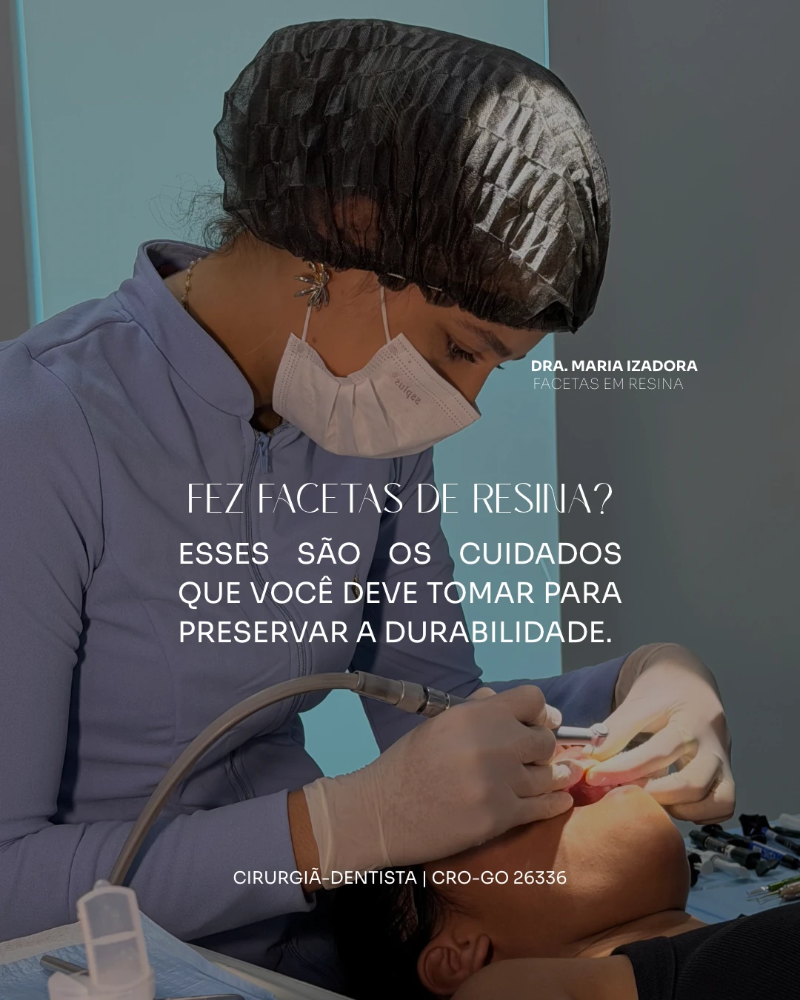
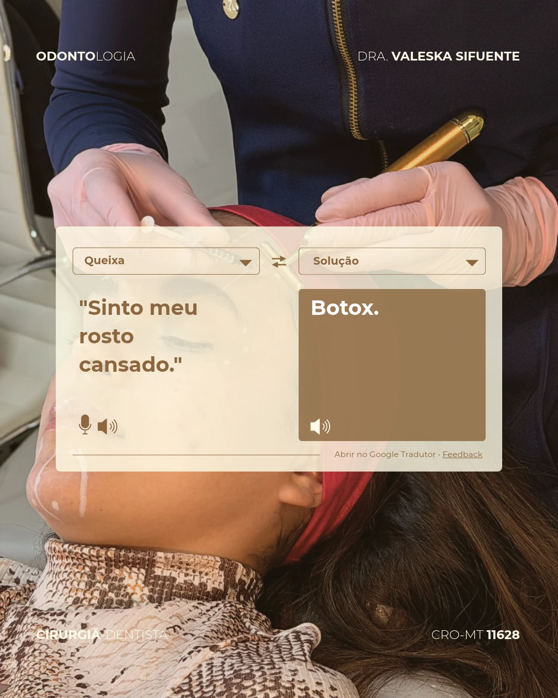
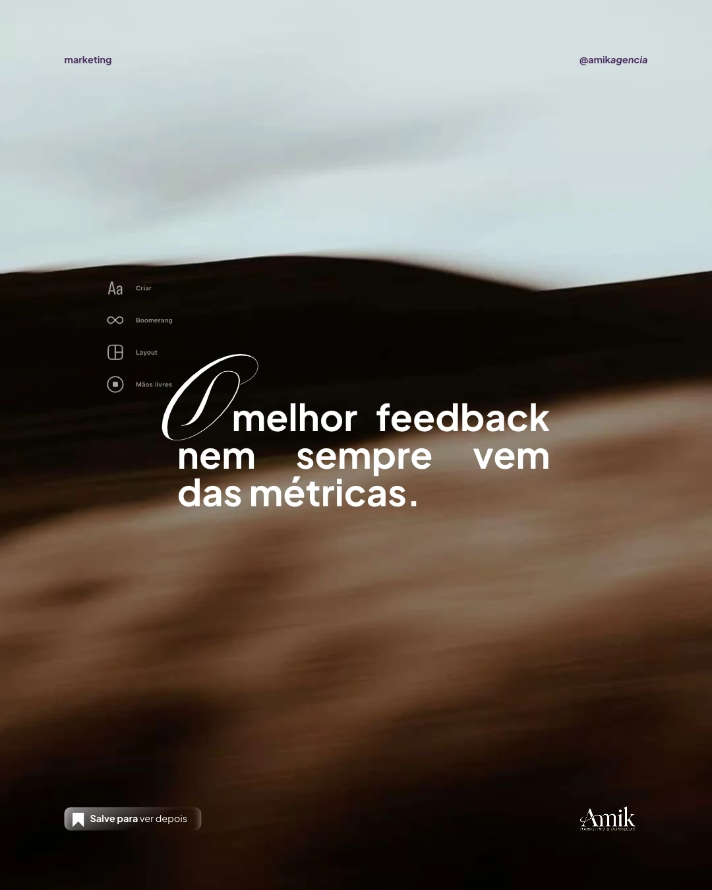
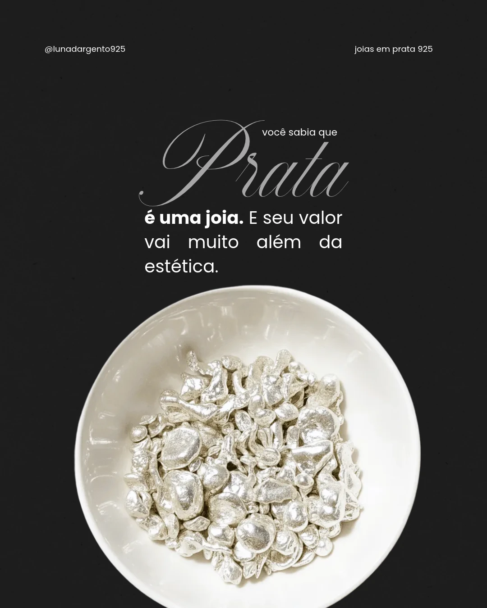

Diagnóstico de perfil
Uma análise do Instagram da clínica, com prioridades claras para orientar os próximos passos.
Analisar meu perfil ↗MARKETING PARA PROFISSIONAIS DA SAÚDE
Sou Ana Paula Amik. Há 8 anos trabalho com marketing e hoje ajudo profissionais da saúde a comunicar o próprio valor com estratégia e conteúdo que têm a cara de cada clínica.
UMA COMUNICAÇÃO COM A SUA VOZ
A estratégia começa entendendo sua história, seus serviços e o jeito como você atende. A partir daí, cada conteúdo tem um motivo para estar ali.
SERVIÇOS
Você pode começar por uma frente ou organizar a comunicação da clínica de forma mais completa.
Uma análise do Instagram da clínica, com prioridades claras para orientar os próximos passos.
Analisar meu perfil ↗Planejamento e conteúdo para manter a comunicação da clínica organizada, coerente e constante.
Falar sobre gestão ↗Anúncios planejados de acordo com seu objetivo, seu público e a capacidade de atendimento.
Falar sobre anúncios ↗Vídeos planejados e editados para transformar sua rotina e seu conhecimento em conteúdo.
Falar sobre vídeos ↗Pautas e datas organizadas para dar direção e continuidade à comunicação da clínica.
Organizar conteúdos ↗Carrosséis e peças visuais construídos com a identidade e o posicionamento da sua marca.
Falar sobre design ↗COMO FUNCIONA
Antes de pensar em post, campanha ou identidade, conversamos sobre o que você faz e onde quer chegar.
Agendar uma conversa ↗Conheço sua rotina, seus serviços e o que você espera da comunicação.
Organizamos prioridades e definimos o formato de trabalho mais adequado.
A estratégia vira uma comunicação clara, reconhecível e feita para sua clínica.
Acompanhamos o que está funcionando e refinamos o trabalho com você.
ALGUNS DOS NOSSOS TRABALHOS
Explore projetos de saúde e, em “Outros trabalhos”, conteúdos autorais e de outros segmentos.

Carrossel educativo sobre cuidados e manutenção.

Carrossel de serviços com diferentes necessidades dos pacientes.
Peça de divulgação para campanha de atendimento.

Direção de arte e narrativa para o próprio perfil profissional.

Carrossel educativo sobre joias, material e significado.
SOBRE MIM
Sou Ana Paula Amik, estrategista de marketing e fundadora da Amik Agência. Trabalho na área há 8 anos e hoje acompanho de perto profissionais da saúde.
Meu ponto de partida é conhecer a clínica: como você atende, quais serviços oferece e o que deseja comunicar. A estratégia vem daí — para que o conteúdo tenha intenção e continue tendo a sua voz.
Conheça a Amik Agência ↗DE QUEM VIVE O TRABALHO DE PERTO
Estratégia boa é aquela que continua fazendo sentido para quem está por trás da marca.
Ana, brilhou muitoo!! Eu admiro muito a forma como você pensa e cria os conteúdos. Você captou muito quem eu sou. Tem gente que jura que sou eu quem produzo kkkkk de tanto que é conectado comigo o trabalho que você faz. Eu sempre falo: gente, é a maravilhosa da Ana, por que se depender de mim o insta morre kkkk
Ana, estou amando, toda a criatividade os vídeos estão ficando ótimos! Estou tendo avaliações sendo fechadas por pacientes que vieram pelo link da bio. Maravilhoso!
PRÓXIMO PASSO
Vamos conversar sobre como traduzir a essência do seu trabalho em uma presença digital com propósito?
Me chama no WhatsApp ↗